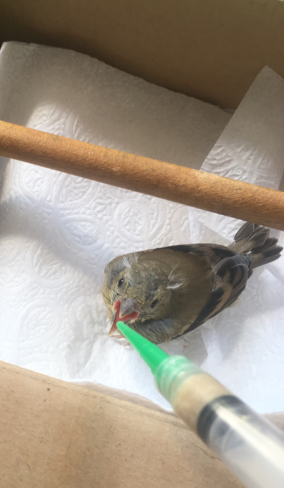
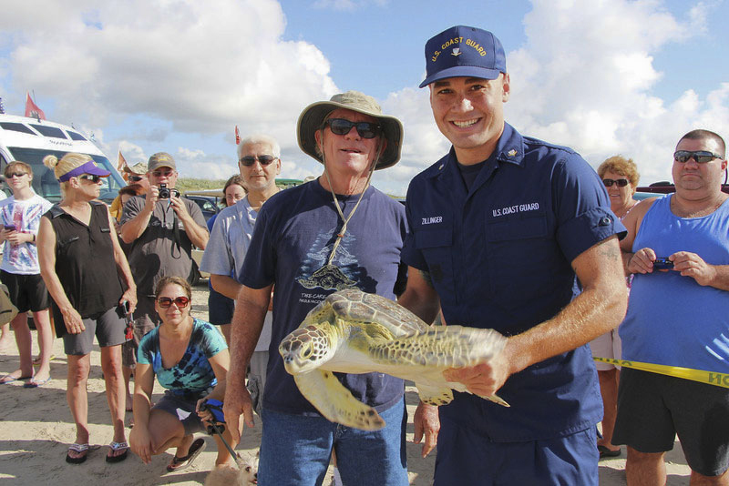
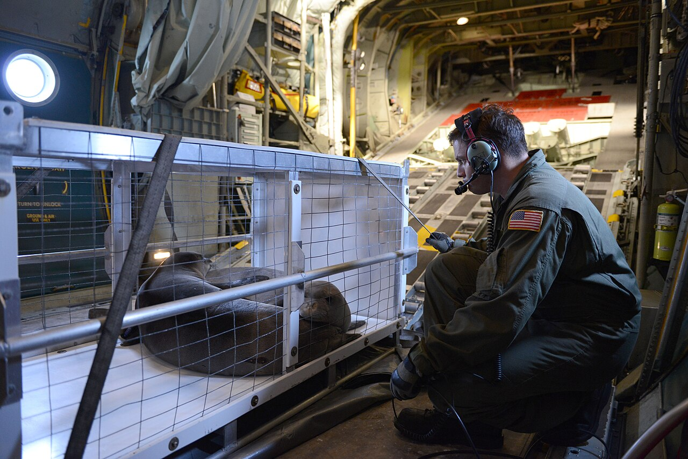

Songbird Recovery
When a tiny songbird was found injured and unable to fly, our wildlife rehabilitators sprang into action. Through careful feeding and a quiet recovery space, the bird regained its strength and was released back into its natural habitat. Stories like this demonstrate how small acts of care can lead to big results.

Proud Pelican Release
After suffering an injury from entanglement, this brown pelican received weeks of care at our facility. Thanks to dedicated volunteers and veterinarians, it fully recovered and took flight once more. The release was a joyful moment for everyone involved and a reminder of why our mission matters.

Sea Turtle Send‑off
Working alongside the U.S. Coast Guard and local volunteers, our team helped rehabilitate several endangered sea turtles before returning them to the ocean. These partnerships highlight the collective effort required to protect our planet’s most vulnerable creatures.

Habitat Restoration Triumph
Over a single weekend, dozens of volunteers rolled up their sleeves to remove invasive plants, plant native trees and clean up a local park. Today, the area teems with bird song and pollinators, demonstrating the power of community to revive nature.

Seal Flight Home
When several harbor seal pups were stranded due to storms, our team
partnered with aviation crews to transport them to a marine sanctuary.
After careful rehabilitation they were released back into the ocean,
healthier and stronger than ever. Stories like this highlight the
collaboration needed to give wildlife a second chance.